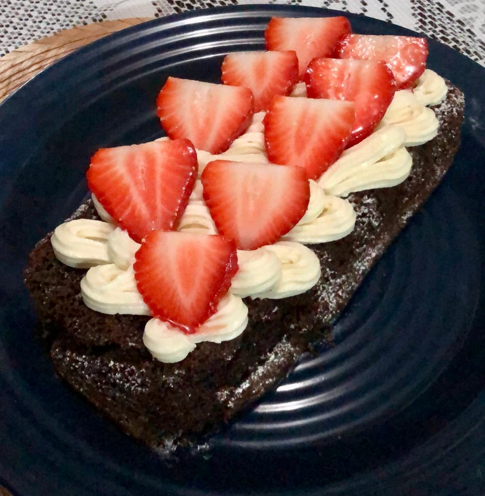
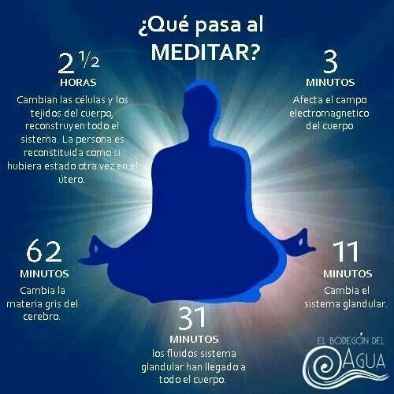

Actividades Extras:
|
Repostera en tiempos libres
Me encanta preparar postres porque de esa manera me despejo y me encanta la serie de pasos a seguir, se me hace algo muy relajante para al final obtener una deliciosidad. |
 |
|
Me gusta Meditar
Creo que a veces tenemos mucho ruido interiormente y simplemente lo ignoramos y a la larga ese ruido nunca se calla cada vez es mas intenso mientras tanto con la meditación encuentras tu paz interior o simplemente sanas lo que realmente hacía ruido |
 |